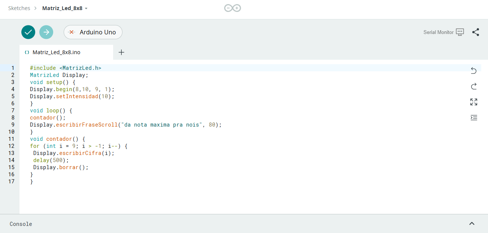
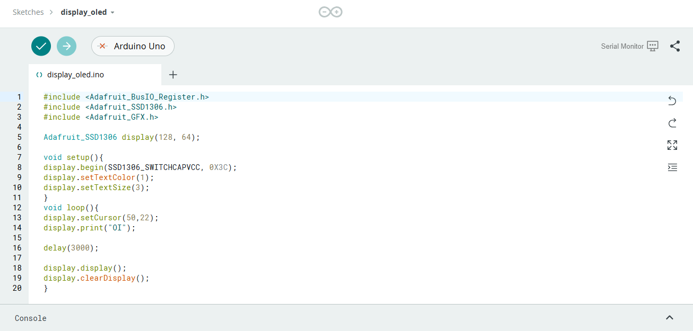
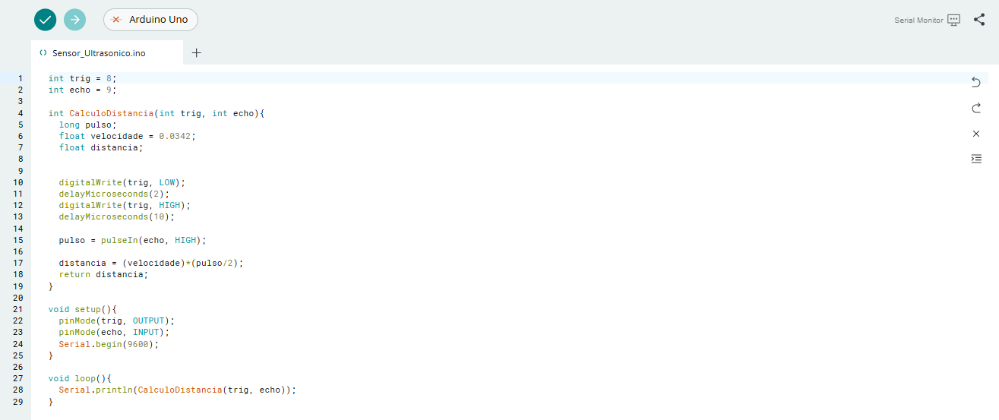

Meus Projetos

Matriz de led 8x8
matriz de LED é capaz de controlar 8x8 LEDs simultaneamente. Pronto para usar, possui um display de 64 leds vermelhos. Suporta vários modulos em cascata.

Display Oled
é uma tela pequena e de baixo consumo que exibe informações de forma clara e nítida, utilizando a tecnologia OLED para iluminar cada pixel individualmente.

Sensor Ultrassônico
o sensor ultrassônico é um dispositivo eletrônico que usa ondas ultrassônicas para medir a distância de um objeto. As ondas ultrassônicas são emitidas pelo sensor e refletidas pelo objeto, assim é possível medir o tempo que leva para o som refletido retornar ao sensor.